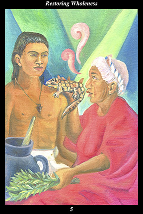

 | IMAGE: An old woman heals a young male warrior, who wears an arrowhead necklace. While she chants an ancient curing song, she places a lizard on his shoulder and administers purifying herbs and water. |
INTERPRETATION:
This hexagram depicts great
benefit fulfilling great need. The old woman personifies the great-great-great-grandmother, the feminine force of profound wisdom and nurturing, the inner healing force within all, the aged and loving medicine woman. The male warrior personifies the strength and vitality of youth, the great potential of the young, the idealism and insensitivity of the inexperienced, the impatient and reactive nature of the untrained passions. Taken together, they symbolize the exchange of forces needed to heal your old wounds and enable you to bring
benefit to all around you. The herbs symbolize the feminine medicines of compassion and the understanding of relationships. The arrowhead represents the masculine medicines of single-mindedness and the pursuit of new experiences. Taken together, they depict the exchange of energies whereby the new must be refined by the old and the old must periodically be revitalized by the new. For this reason, the hexagram shows that the young warrior is both a patient and an apprentice of the medicine woman, learning firsthand the ways of restoring natural and original wholeness and, thereby, bringing much needed energy to the feminine half that has been giving to others for so long. The lizard, the one who grows back its tail, represents the spiritual medicine of regeneration whereby the original state of wholeness is restored. The medicinal herbs and water together represent the purifying and cleansing away of the useless, the wasteful, and that which only confuses and drags down the original energy of body, mind, and spirit. Taken together, these symbols mean that you reclaim your spiritual birthright of indivisible wholeness.
ACTION:
The masculine and feminine halves of the spirit warrior replenish one another. It is a time for seeking new experiences that will broaden your vistas and deepen your joy of life. Your innate wisdom and compassion do not have their source in thought but, rather, in life—they are not replenished by good intentions but, rather, by meaningful experiences. In order for a well to bring
benefit to others, it must tap into the unseen river of
benefit flowing beneath the surface of the world of the senses. Take no comfort in your accomplishments or knowledge now. Instead, look to your need and pursue new interests that hold the possibility of discovering more meaningful joy in this lifetime. Take a more playful and spontaneous approach to matters for a while, confident that what you find will reinvigorate your more serious efforts to nurture others. It is not necessary to know ahead of time what new interest will prove meaningful—just as following a butterfly might accidentally lead you to a treasure, simply follow whatever captures your attention at present, confident that the creative forces will lead you to the proper goal. Unsettling the beneficial feminine force in this way breaks up routines of thought, feeling, and memory, forcing you to reach a more effective balance between giving and having enough to give. Because you make yourself whole again, you succeed in bringing
benefit to others likewise seeking to restore their own wholeness.
INTENT:
When people’s reactions are out of proportion to events, it is a clear signal that an old wound has not fully healed and is being reactivated by present circumstances. Such reactions barely disguise the fact that something in the present is provoking an individual or group to relive the emotions of an old injury. But disguise it they do, for the impact of many injuries is either long-forgotten or unrecognized. Whether you find this imbalance in yourself or others, the nurturing-medicine of the wise feminine force must be augmented by the directing-medicine of the single-minded masculine force: while it is essential that the wounded warrior be healed through reassurance and loving-kindness, it is just as necessary that the wounded warrior take up the discipline of recognizing that the new is not the old. At the first sign of distress, the wounded warrior must immediately name the present and not allow the past wound to be re-opened. Using the beneficial masculine force in this way allows you to keep the past from infecting the present.
SUMMARY:
A forgotten part of you returns and takes the lead in establishing a new sense of inner unity and purpose. Welcome the idealism and vitality of the young masculine warrior back into yourself and then act on your newfound vision of your future. Over-confidence is preferable to timidity at this time. Balance your roles and responsibilities with the new and the exciting and the daring.
The Line Changes
1° The window of opportunity opens—you
benefit substantially from the goodwill of your superiors. Their support means you are able to initiate your project—do not betray their faith in you by giving less of yourself than you promised. Find a way to keep this excitement and gratitude always alive.
2° This relationship proves exceptionally beneficial for both of you—you are able to advance because others invite you to approach. Beware of stagnant routines masquerading as real continuity.. The art of renewal arises from starting over in surprising ways.
3° When times are difficult for nearly everyone, survival justifies benefiting from those with more than enough. But it is imperative that you conduct yourself with integrity and violate no ethics. It is best to have something of real
benefit to exchange—but it is essential that you cause no one harm.
4° When you have eradicated all personal interest in the outcome of events, so that you never gain any advantage from your opinions, then your advice will be sought by those above and below. Such ethical counsel is hard to find—cultivate it. Such an impartial heart benefits all—nurture it.
5° Those who control the allocation of resources must be of the highest character, incapable by nature of playing favorites or rewarding unethical conduct. The judicious allotment of resources revitalizes growth and stimulates prosperity. Target those endeavors that produce more than they consume.
6° When renewal is exploited to provide an excuse for making self-serving changes, then others take an antagonistic position. No matter how it may be justified, if you take advantage of others, you undercut the very support you will need. Pretend to be more caring and generous until you are.